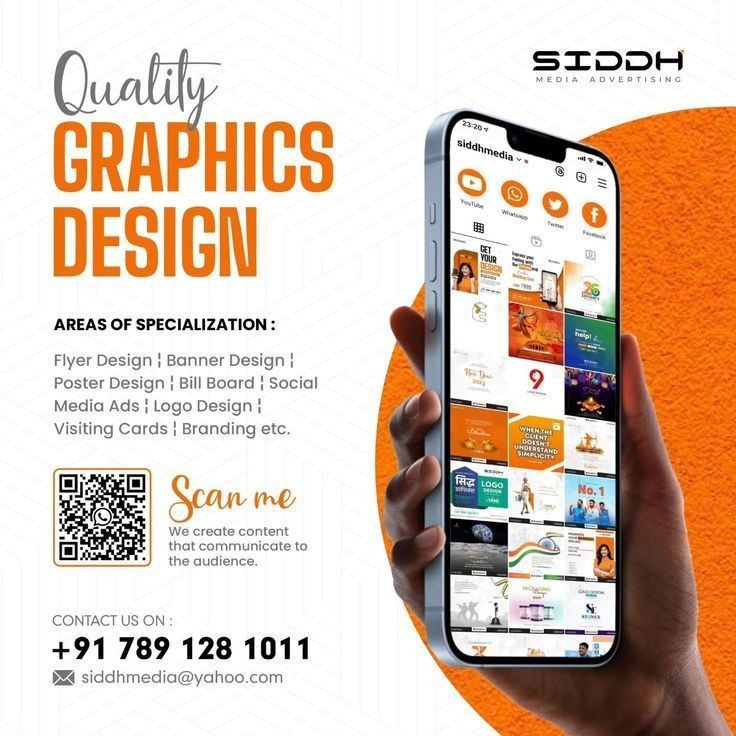
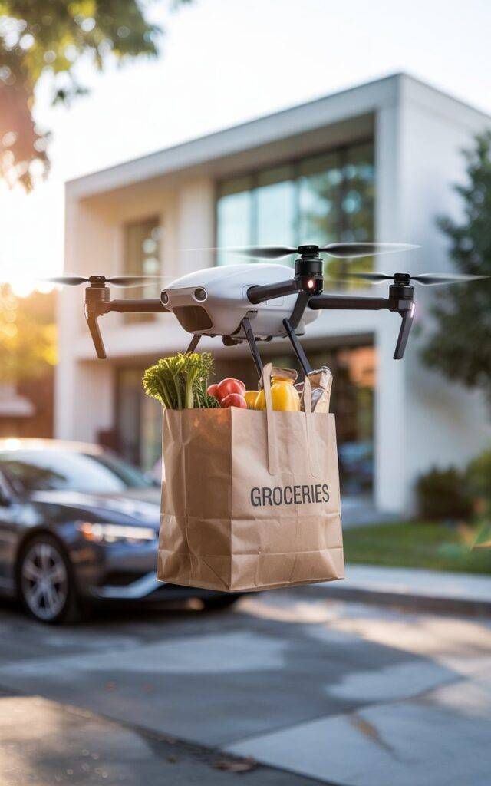

Créativité
Design & Photoshop
Transformer des idées en visuels percutants. J'aime explorer l'esthétique du UI design sur Figma et la retouche photo.
Ce qui m'anime en dehors du code et de reseaux d'administraction de l'immobilier.

Transformer des idées en visuels percutants. J'aime explorer l'esthétique du UI design sur Figma et la retouche photo.

je fasciné par complexite et l'interconnectivite des reseaux administratifs. Je m'intéresse de près à la manière dont les drones peuvent révolutionner la cartographie.
Articuler un raisonement. Je suis passionné aussi par les statistiques de jeu et l'esprit de compétition.